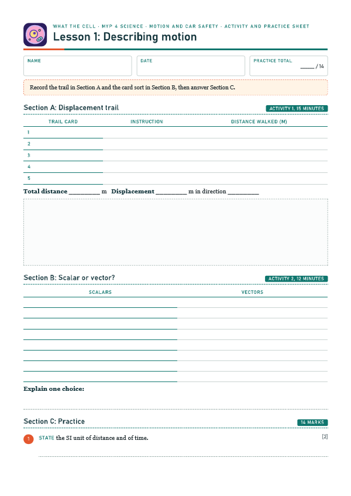

By the end of the lesson you can
- Use SI units and prefixes for distance and time
- Distinguish between distance and displacement
- Classify quantities as scalars or vectors
- Draw displacement as an arrow to scale
Keys: arrows or a presentation clicker move the slides, F for full screen. Slides with a red dot have a video or simulation.
Videos (all 5 minutes or less)
- 3:22
Scalar and vector quantities
Cognito. While you watch: What is the difference between a scalar and a vector? Slide 10.
Simulations
- Lab
- PhET
Print and practise

Activity and practice sheet
Used in the lesson’s activities, with practice questions. Your teacher has the answers.
Download (PDF)Lesson 1 slides
All 17 slides in one file, to read again or print. The video buttons on the slides open YouTube.
Download the slides (PDF)Revising? The Revision tab on the unit page has the unit notes and review.
Class activity pack
Everything to print for the lesson’s activities: picture cards, sorting mats, station cards with their kit lists, and the teacher’s set-up notes. Print it before class.
Download the activity pack (PDF)Notes: Describing motion
distance
How far something travels along its path. For example: a 400 m lap.
displacement
The straight-line distance and direction from start to finish. For example: 0 m after a full lap.
scalar
A quantity with size only. For example: mass, time, speed.
vector
A quantity with size and direction. For example: force, velocity.
SI unit
The standard scientific unit. For example: metre, second, kilogram.
prefix
A word part that multiplies a unit. For example: kilo = 1000.
Key words
| distance | how far along the path (scalar) |
|---|---|
| displacement | straight line from start to finish, with direction (vector) |
| scalar | size only |
| vector | size and direction |
| SI unit | standard unit, e.g. metre, second |